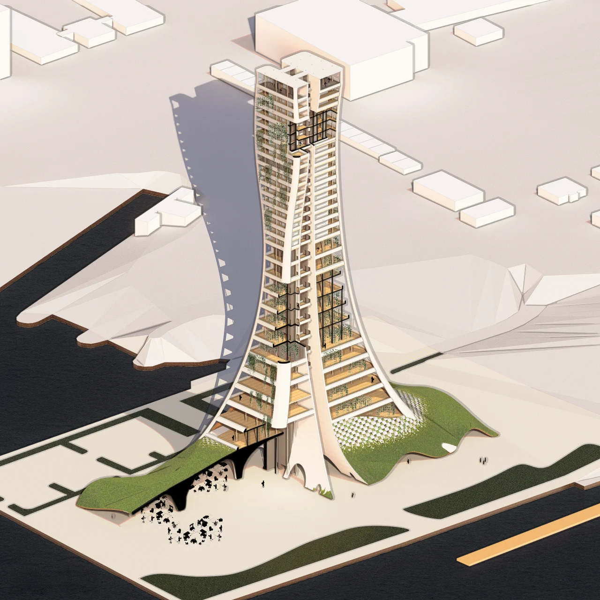

London Vertical Farm
Vertical farming studies.
A collection of massing, program, drawing, and rendering studies, organized across two design versions.
Project overview
Explore the project through its presentation, rendered views, and drawings below.
Concept & process
[Add the project brief, location, scale, design concept, collaborators, and development process.]
Presentation & PDF books
Renders & drawings
